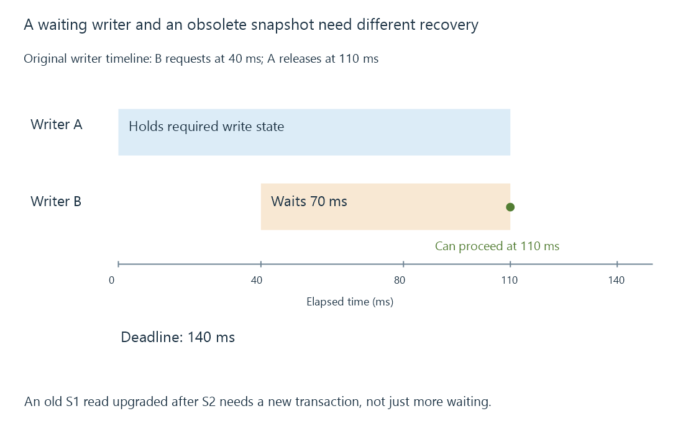

Database locking and competing operations
Database locking coordinates conflicting operations, and a busy result can require waiting, ending a snapshot or restarting a transaction according to its cause.
A database lock coordinates operations whose concurrent execution would violate its storage or transaction rules. A waiting operation is not necessarily corrupt or unauthorized; it may be competing with another legitimate operation.
The useful diagnosis identifies what is held, what the new operation requests and whether waiting can change that relationship.
A second writer can wait for the first
SQLite serializes writes, including in WAL mode. An original scheduling example is:
Writer A holds the required write state until 110 ms.
Writer B requests it at 40 ms.
B's deadline is 140 ms.
If A releases at 110 ms and no other conflict appears:
B can proceed after 70 ms of waiting, before its deadline.
A busy timeout bounds how long the caller waits under the applicable API behavior. It does not reserve the resource or guarantee that the owner finishes in time.

Long transactions hold their relevant state longer. Work that could occur before beginning a transaction or after committing it need not always occupy that same critical interval.
A stale read snapshot is a different conflict
Suppose connection R begins a WAL read transaction at state S1. Another connection commits S2. R then tries to turn its old read into a write.
SQLite can reject that upgrade with a snapshot-busy result. Simply waiting for more time does not make R's S1 snapshot become S2. The application needs to end the old transaction and re-evaluate its intended work against an appropriate current state.
This matters for a “read, calculate, update” operation. Retrying only the final write can apply a calculation based on information that is no longer current.
| Conflict | What can resolve it |
|---|---|
| Another writer temporarily holds the resource | Release and a supported wait/retry |
| Caller has an obsolete read snapshot for an upgrade | End that transaction and start a suitable new attempt |
| Database path is unwritable | Correct the storage access problem |
| Required storage is unavailable | Restore that resource, rather than increasing a lock timeout |
| Long-lived reader limits checkpoint progress | End the relevant reader when the application can do so |
Locking mode affects readers too
Rollback-journal and WAL arrangements have different reader/writer coordination. WAL readers can continue from their snapshots while another connection writes, but there is still one writer and there can still be busy conditions.
Database-level coordination is also different from an arbitrary file lock acquired by another program. Opening the database files outside the database engine does not participate correctly in every engine lock protocol.
For an Emby workload, overlapping scans, user-state updates and other database activity can be relevant context for a busy operation. The exact error and transaction state determine the retry boundary. An isolated toy example verifies writer contention and stale-snapshot recovery without using a real server database.
See Also
- Database transactions and atomic application changes
- Database write-ahead logging, readers and checkpoints
- File locking, share modes and concurrent access
- Background task scheduling and shared resources